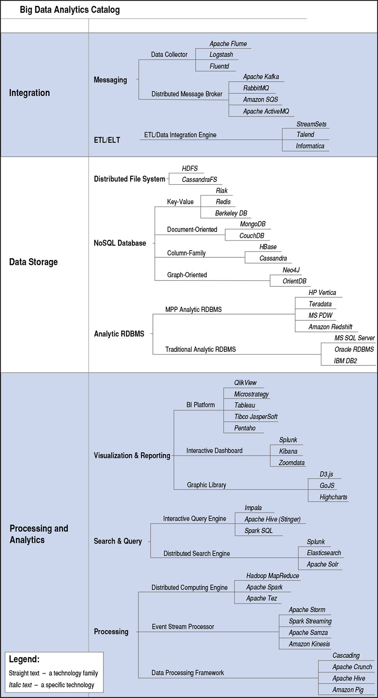
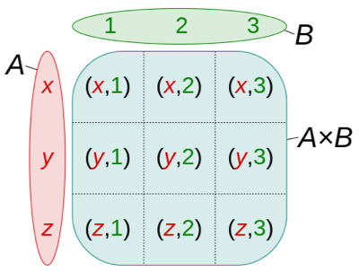
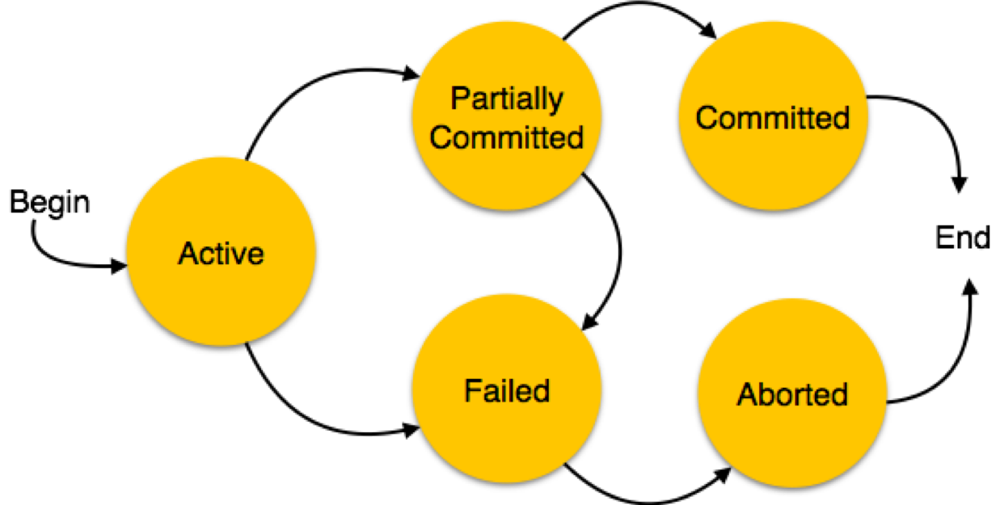
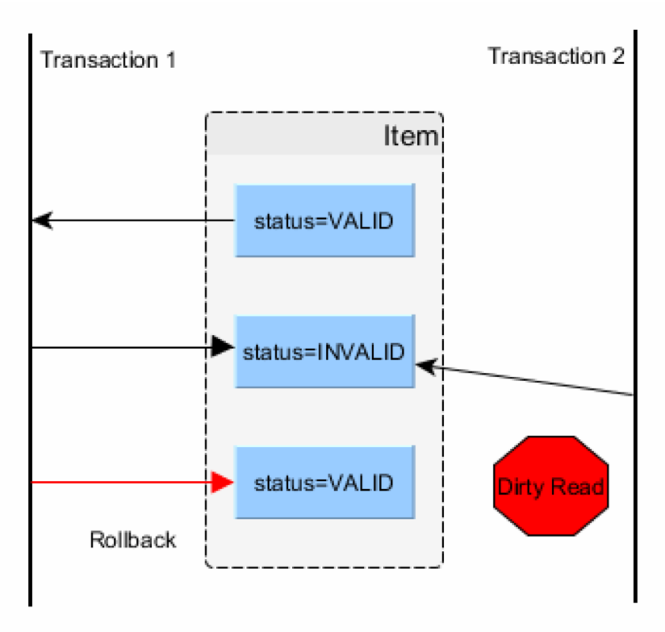
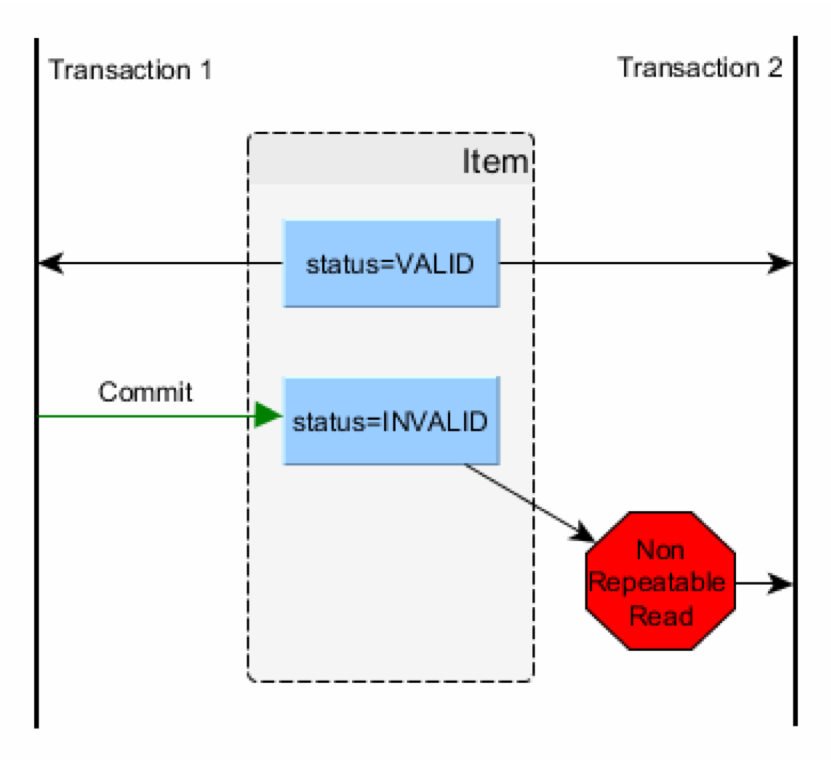
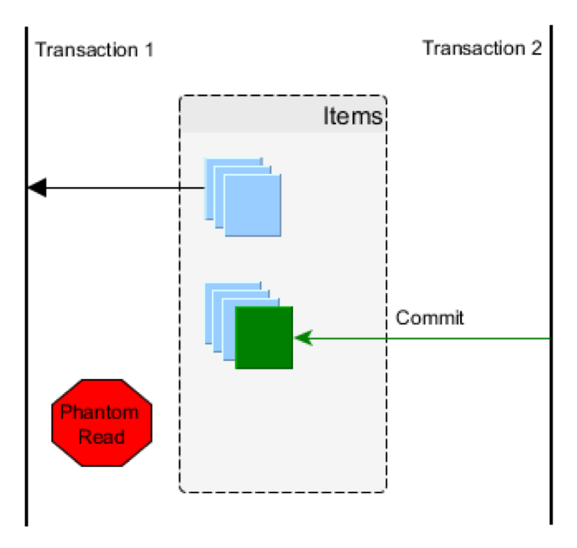
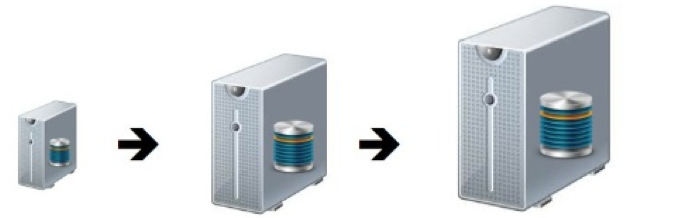
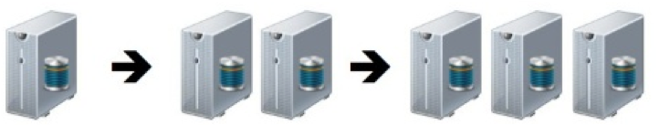
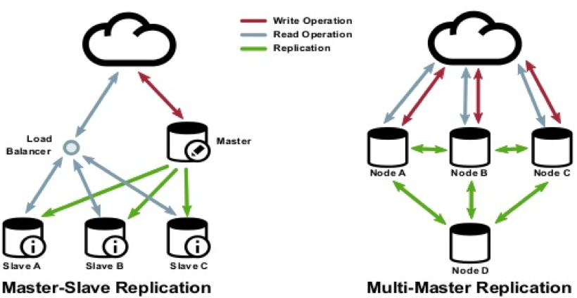
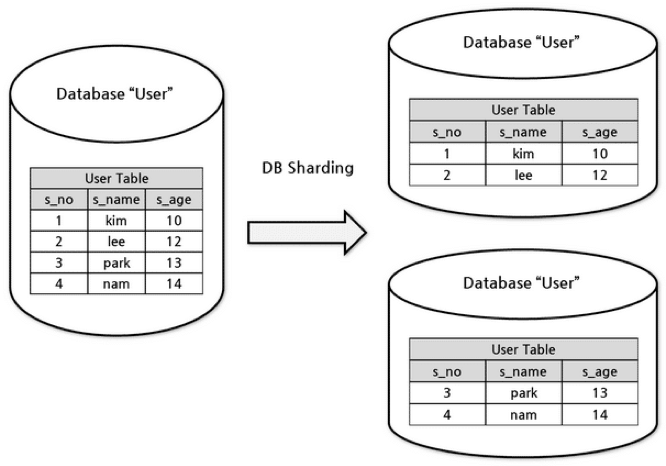

Big Data System Design
Architecturen en ADD
Roelant Ossewaarde en Jos van Reenen, B 2019-2020
1 Architectural Design
Het boek van Kazman (Link naar ebook) gaat over een strategie om architecturen te ontwerpen.

Figure 1: Architecture Design (Kazman, fig. 2.1)
1.1 Technology family tree voor Big Data
{kind=link}

Figure 2: Technology family tree for Big Data (Kazman, fig. 2.10)
"Architectural design is, therefore, a key step to achieving your product and project goals. Some of these goals are technical (e.g., achieving low and predictable latency in a video game or an e-commerce website), and some are nontechnical (e.g., keeping the workforce employed, entering a new market, meeting a deadline)."
2 Bepalen van requirements
Gebaseerd op hoofdstuk 5 van "Designing Software Architectures" (Cervantes & Kazman 2016).
Business case: Een Internet bedrijf bedient veel klanten dmv. online-content (vgl. reddit). Al hun systemen maken logs aan met gegevens over de systemen, gedrag van gebruikers, etc. Deze logs worden gebruikt om bedrijfsprocessen bij te sturen.
De infrastructuur groeit hard; er is behoefte aan een nieuw systeem waarmee de verschillende stakeholders inzicht kunnen krijgen in de gelogde gegevens.
2.1 Marketecture

2.2 Use case model
- UC-1: Monitor online services
Mensen van operations moeten de huidige staat van de diensten en infrastructuur kunnen monitoren (zoals web load, aantal gebruikers, etc) op een real-time dashboard.
- UC-2: Troubleshoot online service issues
Als er problemen zijn, moeten systeembeheerders snel door recente logs kunnen zoeken naar relevante berichten over het systeem.
- UC-3: Provide management reports
Voor managementrapportages moeten er over een lange termijn logs opgevraagd kunnen worden over bijvoorbeeld het gebruik van de infrastructuur en knelpunten.
- UC-4: Support data analytics
- UC-5: Anomaly detection
- UC-6: Provide security reports
2.3 Quality attribute scenarios
- QA-1 Performance
Het systeem moet 15000 events per seconde van ongeveer 300 web servers kunnen afhandelen.
- QA-2 Performance
Het systeem zal het dashboard updaten met maximaal 1 minuut vertraging (latency).
- QA-3 Performance
Het systeem zal real-time queries ondersteunen voor troubleshooting met een maximum query tijd van 10 seconden over data van 2 weken terug in het verleden.
- QA-6 Schaalbaarheid
Het systeem zal ruwe data voor de laatste 2 weken apart beschikbaar stellen voor full-text searches.
- QA-7 Schaalbaarheid
Het systeem zal ruwe data opslaan voor de afgelopen 60 dagen (1 Tb ruwe data per dag, 60 Tb ruwe data totaal).
2.4 Constraints
- CON-1 Gebruik open source
Vanwege kostenoverwegingen zal het systeem primair gebruik maken van Open Source software.
- CON-2 Gebruik visualizatie
Het systeem zal gebruik maken van een corporate BI-tool met een SQL-interface voor het visualizeren van informatie.
- CON-3 Deployment
Het systeem zal zowel in een private cloud als in een publieke cloud geïntegreerd kunnen worden. Architectuurbeslissingen moeten zo min mogelijk vendor-specifiek (Google, Amazon) zijn.
3 Design proces:

Figure 4: Steps and artifacts of ADD (Kazman, fig. 3.1)
3.1 Stappen in Iteratie #1
- Review Inputs
Bepaal welke use cases significant zijn.
- Bepaal het doel van de iteratie op basis van de drivers
De drivers zijn de kwaliteitsattributen en constraints die van belang zijn voor de significante use cases (uit stap 1).
- Kies elementen van het systeem om over te besluiten
In een eerste iteratie is dat het hele systeem.
- Kies design concepten voor de gekozen drivers uit stap 2.
Geef ook een reden waarom je voor andere mogelijke design concepten niet hebt gekozen. Relevante designkeuzes voor databasetechniek: Reference architectures for Data Analytics.
- Bepaal verantwoordelijkheden en interfaces
In een eerste iteratie nog niet relevant.
- Schets architectuur en documenteer beslissingen.
- Review
4 Referentiestructuren
Er zijn verschillende keuzes te maken over met name data opslag en analyse bij het opstellen van een architectuur:

NB terminologie:
- Extract Transform Load
- MPP: Massively Parallel Processing: problemen waar verschillende CPU's tegelijk aan kunnen werken.
5 Pure Relational

Bekende technologie: MySQL, PostgreSQL, MSQL.
De ETL en messaging vinden plaats in het RDBMS. Als er een voorbewerking van de data plaats vindt buiten het database-systeem (bijvoorbeeld door scripts), dan is het een 7.
5.1 Relationele data model
Gebaseerd op set theorie:
- Selectie (welke rijen)
- Projectie (welke kolommen)
- JOIN (cartesisch product)
- Klassieke set-operaties

5.2 Data integriteit slechts gegarandeerd door design (normalizatie)
Data anomalies worden voorkomen door redundantie te verminderen.
Daardoor een grotere hoeveelheid tabellen (want tabellen vaker opgesplitst).
5.3 Transaction lifecycle

5.4 Concurrency Issues - Dirty reads
Verschillende transacties tegelijk kunnen leiden tot 'dirty reads'.

Figure 9: Concurrency issue: interleaving
De eerste transactie vraagt iets ('status') van de database, is VALID op dat moment. Binnen die transactie wordt de status op INVALID gezet. De transactie wordt niet afgemaakt, en dus wordt de status weer op VALID gezet.
De tweede transactie leest halverwege de eerste transactie dat de status INVALID is.
5.5 Concurrency Issues - Non-repeatable read.

Figure 10: Concurrency issue: nonrepeatable read.
De eerste transactie en de tweede transactie lezen allebei dezelfde variabele in. Binnen de eerste transactie wordt dezelfde variabele daarna nogmaals uitgelezen, maar misschien is die variabele inmiddels veranderd.
5.6 Concurrency Issues - phantom read

Figure 11: Concurrency issue: phantom read
Speciaal geval van non-repeatable read: de eerste transactie leest iets, en terwijl die transactie nog niet is afgelopen, verandert transactie 2 de database. Transactie 1 en transactie 2 hebben nu een verschillend beeld van de inhoud van de database.
5.7 Verschillende niveaus van isolation maken database consistenter
| Isolation level | Dirty reads | Non-repeatable reads | Phantom reads |
|---|---|---|---|
| serializable | ✘ | ✘ | ✘ |
| Repeatable reads | ✘ | ✘ | ✓ |
| Read committed | ✘ | ✓ | ✓ |
| Read uncommitted | ✓ | ✓ | ✓ |
Voorbeeld: als de database transacties isoleert op het niveau van read uncommitted (het laagste niveau) dan kunnen er dirty reads, non-repeatable reads en phantom reads plaatsvinden. Op het hoogste niveau van transactie isolatie (serializable) kan dat niet.
Maar: hoe hoger het niveau van isolatie, hoe moeilijker de database schaalbaar wordt.
5.8 Schaalbare systemen

Vertical Scaling:
- Add resources to a node
- Increase capacity
- Load unaffected
- System complexity unaffected
- AKA Scale-Up

Horizontal Scaling
- Add nodes to a cluster
- Capacity unaffected
- Decreased Load
- Availability and throughput with increased complexity
- AKA Scale-Out
5.9 Hoe kan een RDBMS horizontaal schalen?

Replication
- Auto-backup
- Master = SPoF+ bottleneck
- Synchronization?
Sharding

- Horizontal partitioning
- Split rows over nodes
- Cross-shard joins difficult
- Optimal sharding?
- Locality of reference
- Concurrency is complex
- Requires coordination
5.10 ACID en Distributed gaan niet goed samen
Want hoe kun je horizontaal schalen en tegelijkertijd database concurrency over verschillende systemen implementeren?
6 Extended Relational

Vooral geschikt voor CPU-intensieve problemen ("Massively Parallel Processing") waarbij het volume data minder ver opschaalt.
Variatie in vorm van queries mogelijk (snel antwoord), maar bottleneck: geen on-disk persistentie.
7 Data refinery

Voorbewerking vindt plaats buiten relationele database. Dat maakt in-memory relationele database mogelijk.
Real-time analyse is beperkt (want er is een voorbewerking), volume is beperkt tot geheugengrenzen, maar wel grote varieteit aan data mogelijk doordat er een uitgebreide voorbewerking mogelijk is.
8 Pure Non-relational

Vooral geschikt als de vorm van queries al vaststaat en het schaalprobleem vooral het volume van de data betreft.
8.1 CAP theorem

8.2 CAP theorem

8.3 NoSQL
Vier belangrijke categorieën:
- Key-Value stores (Dynamo, Cassandra, Riak, Redis)
- Document stores (CouchDB, MongoDB, ElasticSearch)
- Wide column stores (HBase, Cassandra, BigTable)
- Graph databases (Neo4J, OrientDB)
- Streaming databases (Spark, Flink)
Vereenvoudigingen:
- Geen relationeel model.
- In plaats van ACID-properties, BASE:
- *B*asically *A*vailable. (data mag verouderd zijn)
- *S*oft state (het systeem kan veranderen, heb geen vertrouwen)
- *E*ventually consistent. (het duurt soms voordat de database consistent is).
9 Lambda architecture

Kan alles, schaalt ongelimiteerd. Maar duur in onderhoud, want verschillende databases/codebases/etc.
10 Kappa architecture

11 Vooruitblik
De hele keten van ontwerp naar implementatie vereist gedegen kennis van de technische mogelijkheden.
In de workshops op vrijdagen gaan we spelen met de verschillende referentiearchitecturen zodat je aan het eind van de cursus een beeld hebt van hoe ze werken.